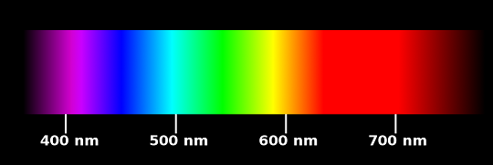

II. Tổng Quan
-
Nhắc lại nhanh: ánh sáng khi truyền qua lăng kính hoặc lưới nhiễu xạ sẽ tách thành các màu — ta có
quang phổ.
-
Fact: ngoài quang phổ liên tục, còn có quang phổ vạch phát xạ và
quang phổ vạch hấp thụ — rất quan trọng trong vật lí nguyên tử.
-
Mục tiêu: tìm hiểu rõ hai loại quang phổ vạch này, cơ chế hình thành, đặc điểm, so sánh và ứng dụng.
